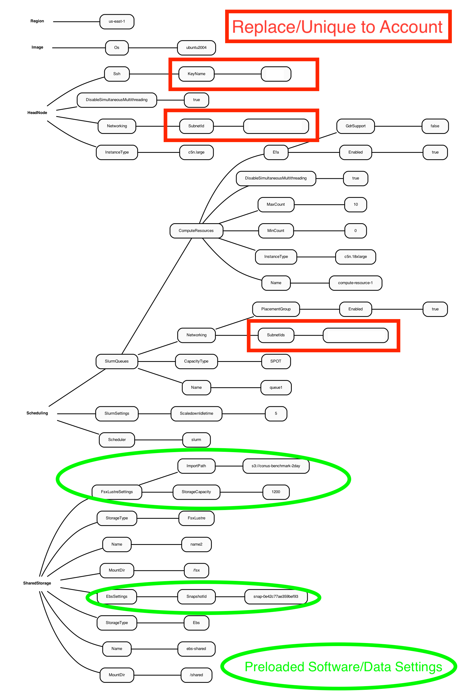

4.0 Run CMAQ using Parallel Cluster YAML that is pre-loaded with input data and software#
4.1 Import data from S3 Bucket to Lustre#
Justification for using the capability of importing data from an S3 bucket to the lustre file system over using elastic block storage file system and copying the data from the S3 bucket for the input and output data storage volume on the cluster.
Saves storage cost
Removes need to copy data from S3 bucket to Lustre file system. FSx for Lustre integrates natively with Amazon S3, making it easy for you to process HPC data sets stored in Amazon S3
Simplifies running HPC workloads on AWS
Amazon FSx for Lustre uses parallel data transfer techniques to transfer data to and from S3 at up to hundreds of GB/s.
Lustre Performance Documentation
To find the default settings for Lustre see: Lustre Settings for Parallel Cluster
4.2 Examine Diagram of the YAML file to build pre-installed software and input data.#
Includes Snapshot ID of volume pre-installed with CMAQ software stack and name of S3 Bucket to import data to the Lustre Filesystem
Figure 1. Diagram of YAML file used to configure a Parallel Cluster with a c5n.large head node and c5n.18xlarge compute nodes with Software and Data Pre-installed

4.4 Create the CMAQ MVP Parallel Cluster with software/data pre-installed#
pcluster create-cluster --cluster-configuration c5n-18xlarge.ebs_unencrypted_installed_public_ubuntu2004.fsx_import.yaml --cluster-name cmaq --region us-east-1
Output:
{
"cluster": {
"clusterName": "cmaq",
"cloudformationStackStatus": "CREATE_IN_PROGRESS",
"cloudformationStackArn": "arn:aws:cloudformation:us-east-1:440858712842:stack/cmaq/6cfb1a50-6e99-11ec-8af1-0ea2256597e5",
"region": "us-east-1",
"version": "3.0.2",
"clusterStatus": "CREATE_IN_PROGRESS"
}
}
Check status again
pcluster describe-cluster --region=us-east-1 --cluster-name cmaq
Output:
{
"creationTime": "2022-01-06T02:36:18.119Z",
"version": "3.0.2",
"clusterConfiguration": {
"url": "
},
"tags": [
{
"value": "3.0.2",
"key": "parallelcluster:version"
}
],
"cloudFormationStackStatus": "CREATE_IN_PROGRESS",
"clusterName": "cmaq",
"computeFleetStatus": "UNKNOWN",
"cloudformationStackArn":
"lastUpdatedTime": "2022-01-06T02:36:18.119Z",
"region": "us-east-1",
"clusterStatus": "CREATE_IN_PROGRESS"
}
After 5-10 minutes, check the status again and recheck until you see the following status: “clusterStatus”: “CREATE_COMPLETE”
Start the compute nodes
pcluster update-compute-fleet --region us-east-1 --cluster-name cmaq --status START_REQUESTED
4.5 Log into the new cluster#
(note replace your-key.pem with your Key)
pcluster ssh -v -Y -i ~/your-key.pem --cluster-name cmaq
Verify the Parallel Cluster contains the software pre-loaded on the /shared volume from the EBS drive snapshot
ls /shared/build
Create a .cshrc file by copying it from the git repo that is on /shared/pcluster-cmaq
cp /shared/pcluster-cmaq/dot.cshrc.pcluster ~/.cshrc
Source shell
csh
Load the modules
module avail
Output:
------------------------------------------------------------ /usr/share/modules/modulefiles -------------------------------------------------------------
dot libfabric-aws/1.13.2amzn1.0 module-git module-info modules null openmpi/4.1.1 use.own
Load the modules openmpi and libfabric
module load openmpi/4.1.1
module load libfabric-aws/1.13.2amzn1.0
4.6 Verify that the input data was imported from the S3 bucket#
cd /fsx/12US2
Notice that the data doesn’t take up much space, it must be linked, rather than copied.
du -h
Output:
27K ./land
33K ./MCIP
28K ./emissions/ptegu
55K ./emissions/ptagfire
27K ./emissions/ptnonipm
55K ./emissions/ptfire_othna
27K ./emissions/pt_oilgas
26K ./emissions/inln_point/stack_groups
51K ./emissions/inln_point
28K ./emissions/cmv_c1c2_12
28K ./emissions/cmv_c3_12
28K ./emissions/othpt
55K ./emissions/ptfire
407K ./emissions
27K ./icbc
518K .
The run scripts are expecting the data to be located under /fsx/data/CONUS/12US2
Need to make this directory and then link it to the path created when the data was imported by the parallel cluster
mkdir -p /fsx/data/CONUS
cd /fsx/data/CONUS
ln -s /fsx/12US2 .
Also need to create the output directory
mkdir -p /fsx/data/output
4.7 Examine the run scripts#
The run scripts are available in two locations, one in the CMAQ scripts directory.
Another copy is available in the pcluster-cmaq repo.
Verify that the run scripts are updated and pre-configured for the parallel cluster by comparing with what is available in the github repo
cd /shared/build/openmpi_gcc/CMAQ_v533/CCTM/scripts
Example:
diff /shared/pcluster-cmaq/run_scripts/cmaq533/run_cctm_2016_12US2.180pe.5x36.pcluster.csh .
If a run script is missing or outdated, copy the run scripts from the repo.
cp /shared/pcluster-cmaq/run_scripts/cmaq533/run*pcluster.csh /shared/build/openmpi_gcc/CMAQ_v533/CCTM/scripts/
Note, the time that it takes the 2 day CONUS benchmark to run will vary based on the number of CPUs used. See Table 1.6 Benchmark Timing Results in Chapter 1 for reference.
Examine how the run script is configured
head /shared/build/openmpi_gcc/CMAQ_v533/CCTM/scripts/run_cctm_2016_12US2.256pe.8x32.pcluster.csh
Output:
#!/bin/csh -f
## For c5n.18xlarge (72 vcpu - 36 cpu) <<< this run script is configured to run on c5n.18xlarge with hyperthreading turned off (36 cpus)
## works with cluster-ubuntu.yaml
## data on /fsx directory
#SBATCH --nodes=8
#SBATCH --ntasks-per-node=32 <<< note, there are 36 cpus per node, but we only need 32 of them to run a 256 cpu job (8x32)
#SBATCH -J CMAQ
#SBATCH --exclusive
#SBATCH -o /shared/build/openmpi_gcc/CMAQ_v533/CCTM/scripts/run_cctmv5.3.3_Bench_2016_12US2.16x16pe.2day.pcluster.log << NPCOLxNPROW = 16 x 16
#SBATCH -e /shared/build/openmpi_gcc/CMAQ_v533/CCTM/scripts/run_cctmv5.3.3_Bench_2016_12US2.16x16pe.2day.pcluster.log
Note that in this run script, slurm or SBATCH requests 8 nodes, each node with 32 pes, or 8x32 = 256 pes
Verify that the NPCOL and NPROW settings in the script are configured to match. In this case, to run CMAQ using on 256 cpus, use NPCOL=16 and NPROW=16.
grep NPCOL /shared/build/openmpi_gcc/CMAQ_v533/CCTM/scripts/run_cctm_2016_12US2.256pe.8x32.pcluster.csh
Output:
setenv NPCOL_NPROW "1 1"; set NPROCS = 1 # single processor setting
@ NPCOL = 16; @ NPROW = 16
@ NPROCS = $NPCOL * $NPROW
setenv NPCOL_NPROW "$NPCOL $NPROW";
4.8 Submit the job to the slurm queue#
cd /shared/build/openmpi_gcc/CMAQ_v533/CCTM/scripts/
sbatch run_cctm_2016_12US2.256pe.8x32.pcluster.csh
4.9 Check status of run#
squeue
Output:
JOBID PARTITION NAME USER ST TIME NODES NODELIST(REASON)
1 queue1 CMAQ ubuntu PD 0:00 8 (BeginTime)
Note if you see the following message, you may want to submit a job that requires fewer PEs.
ip-10-0-5-165:/shared/build/openmpi_gcc/CMAQ_v533/CCTM/scripts% squeue
JOBID PARTITION NAME USER ST TIME NODES NODELIST(REASON)
1 queue1 CMAQ ubuntu PD 0:00 8 (Nodes required for job are DOWN, DRAINED or reserved for jobs in higher priority partitions)
If you repeatedly see that the job is not successfully provisioned, cancel the job.
scancel
Try submitting a smaller job to the queue.
sbatch run_cctm_2016_12US2.180pe.5x36.pcluster.csh
Or, you may need to update the compute nodes to use ONDEMAND instead of SPOT pricing.
To do this, exit the cluster, stop the compute nodes, then edit the yaml file to modify SPOT to ONDEMAND. See Chapter 3 for the detailed instructions.
pcluster update-cluster --region us-east-1 --cluster-name cmaq --cluster-configuration c5n-18xlarge.ebs_unencrypted_installed_public_ubuntu2004.fsx_import.yaml
Output:
{
"cluster": {
"clusterName": "cmaq",
"cloudformationStackStatus": "UPDATE_IN_PROGRESS",
"cloudformationStackArn": "xx-xxx-xx",
"region": "us-east-1",
"version": "3.1.1",
"clusterStatus": "UPDATE_IN_PROGRESS"
},
"changeSet": [
{
"parameter": "Scheduling.SlurmQueues[queue1].CapacityType",
"requestedValue": "ONDEMAND",
"currentValue": "SPOT"
}
]
}
pcluster describe-cluster --region=us-east-1 --cluster-name cmaq
Output:
"clusterStatus": "UPDATE_IN_PROGRESS"
once you see
"clusterStatus": "UPDATE_COMPLETE"
Restart the compute nodes
pcluster update-compute-fleet --region us-east-1 --cluster-name cmaq --status START_REQUESTED
Verify that compute nodes have started
pcluster describe-cluster --region=us-east-1 --cluster-name cmaq
Output:
"computeFleetStatus": "RUNNING",
Re-login to the cluster
pcluster ssh -v -Y -i ~/your-key.pem --cluster-name cmaq
Submit a new job
sbatch run_cctm_2016_12US2.180pe.5x36.pcluster.csh
Note, If you still have difficulty running a job in the slurm queue, there may be other issues that need to be resolved.
Verify that your IAM Policy has been created for your account.
Someone with administrative permissions should eable the spot instances IAM Policy: AWSEC2SpotServiceRolePolicy
An alternative way to enable this policy is to login to the EC2 Website and launch a spot instance. The service policy will be automatically created, that can then be used by Parallel Cluster.
Check to view any errors in the log on the parallel cluster
vi /var/log/parallelcluster/slurm_resume.log
An error occurred (MaxSpotInstanceCountExceeded) when calling the RunInstances operation: Max spot instance count exceeded
If you encounter this error, you will need to submit a request to increase this spot instance limit using the AWS Website.
Try to submit a 72 pe job 2 nodes x 36 cpus
sbatch run_cctm_2016_12US2.72pe.2x36.pcluster.csh
grep -i 'Processing completed.' CTM_LOG_036.v533_gcc_2016_CONUS_6x12pe_20151223
Output:
Processing completed... 9.0 seconds
Processing completed... 12.0 seconds
Processing completed... 11.2 seconds
Processing completed... 9.0 seconds
Processing completed... 9.1 seconds
tail -n 20 run_cctmv5.3.3_Bench_2016_12US2.72.6x12pe.2day.pcluster.log
Output:
==================================
***** CMAQ TIMING REPORT *****
==================================
Start Day: 2015-12-22
End Day: 2015-12-23
Number of Simulation Days: 2
Domain Name: 12US2
Number of Grid Cells: 3409560 (ROW x COL x LAY)
Number of Layers: 35
Number of Processes: 72
All times are in seconds.
Num Day Wall Time
01 2015-12-22 3562.50
02 2015-12-23 3151.21
Total Time = 6713.71
Avg. Time = 3356.85
Note - the following jobs were submitted using different configuration options on the Parallel Cluster. The record of these jobs is included for you to review, but it is not required to re-submit all of these benchmarks as part of this tutorial.
sbatch run_cctm_2016_12US2.108pe.3x36.pcluster.csh
grep -i 'Processing Completed' CTM_LOG_000.v533_gcc_2016_CONUS_9x12pe_20151222
Output:
Processing completed... 6.0 seconds
Processing completed... 6.0 seconds
Processing completed... 8.3 seconds
Processing completed... 8.2 seconds
Processing completed... 6.0 seconds
`tail -n 18 run_cctmv5.3.3_Bench_2016_12US2.108.9x12pe.2day.pcluster.log
Output:
==================================
***** CMAQ TIMING REPORT *****
==================================
Start Day: 2015-12-22
End Day: 2015-12-23
Number of Simulation Days: 2
Domain Name: 12US2
Number of Grid Cells: 3409560 (ROW x COL x LAY)
Number of Layers: 35
Number of Processes: 108
All times are in seconds.
Num Day Wall Time
01 2015-12-22 2454.11
02 2015-12-23 2142.11
Total Time = 4596.22
Avg. Time = 2298.11
108 pe run with NPCOL=6, NPROW=18 to compare with the following run:
run_cctm_2016_12US2.72pe.2x36.pcluster.csh: @ NPCOL = 6; @ NPROW = 12`
sbatch run_cctm_2016_12US2.108pe.3x36.6x18.pcluster.csh
Compare the answers using m3diff and verify that get matching answers if NPCOL for both runs is identical NPCOL=6.
Note that answers do not match if NPCOL was different, despite the removal of the -march=native compiler flag.
Do a make clean and rebuild
Rerun two cases with different values for NPCOL
Re-check the answers
Also run a case to verify that if NPCOL is identical than answers match.
sbatch run_cctm_2016_12US2.108pe.3x36.6x18.pcluster.csh
tail -n 20 /shared/build/openmpi_gcc/CMAQ_v533/CCTM/scripts/run_cctmv5.3.3_Bench_2016_12US2.108.6x18pe.2day.pcluster.log
Output:
==================================
***** CMAQ TIMING REPORT *****
==================================
Start Day: 2015-12-22
End Day: 2015-12-23
Number of Simulation Days: 2
Domain Name: 12US2
Number of Grid Cells: 3409560 (ROW x COL x LAY)
Number of Layers: 35
Number of Processes: 108
All times are in seconds.
Num Day Wall Time
01 2015-12-22 2415.37
02 2015-12-23 2122.62
Total Time = 4537.99
Avg. Time = 2268.99
Once that is done, save a snapshot of the volume prior to deleting the cluster, to update the run scripts.
Results from the Parallel Cluster Started with the pre-installed software with the input data copied to /fsx from S3 Bucket
Output:
==================================
***** CMAQ TIMING REPORT *****
==================================
Start Day: 2015-12-22
End Day: 2015-12-23
Number of Simulation Days: 2
Domain Name: 12US2
Number of Grid Cells: 3409560 (ROW x COL x LAY)
Number of Layers: 35
Number of Processes: 256
All times are in seconds.
Num Day Wall Time
01 2015-12-22 1305.99
02 2015-12-23 1165.30
Total Time = 2471.29
Avg. Time = 1235.64
Results from Parallel Cluster Started with the software with data imported from S3 Bucket to Lustre
Output:
==================================
***** CMAQ TIMING REPORT *****
==================================
Start Day: 2015-12-22
End Day: 2015-12-23
Number of Simulation Days: 2
Domain Name: 12US2
Number of Grid Cells: 3409560 (ROW x COL x LAY)
Number of Layers: 35
Number of Processes: 256
All times are in seconds.
Num Day Wall Time
01 2015-12-22 1564.90
02 2015-12-23 1381.80
Total Time = 2946.70
Avg. Time = 1473.35
Timing for a 288 pe run
tail -n 18 run_cctmv5.3.3_Bench_2016_12US2.16x18pe.2day.log
Output:
==================================
***** CMAQ TIMING REPORT *****
==================================
Start Day: 2015-12-22
End Day: 2015-12-23
Number of Simulation Days: 2
Domain Name: 12US2
Number of Grid Cells: 3409560 (ROW x COL x LAY)
Number of Layers: 35
Number of Processes: 288
All times are in seconds.
Num Day Wall Time
01 2015-12-22 1197.19
02 2015-12-23 1090.45
Total Time = 2287.64
Avg. Time = 1143.82
Note this performance seems better than earlier runs.. Script used the #SBATCH –exclusive option. All run scripts have been modified to use this option.
tail -n 18 run_cctmv5.3.3_Bench_2016_12US2.10x18pe.2day.log
Output:
==================================
***** CMAQ TIMING REPORT *****
==================================
Start Day: 2015-12-22
End Day: 2015-12-23
Number of Simulation Days: 2
Domain Name: 12US2
Number of Grid Cells: 3409560 (ROW x COL x LAY)
Number of Layers: 35
Number of Processes: 180
All times are in seconds.
Num Day Wall Time
01 2015-12-22 1585.67
02 2015-12-23 1394.52
Total Time = 2980.19
Avg. Time = 1490.09
Submit a minimum of 2 benchmark runs (using two different NPCOLxNPROW) configurations, to create output needed for the QA and Post Processing Sections in Chapter 5.
4.10 CMAQ Benchmark Option 2 (install software on cluster) and proceed to Chapter 8, Post Processing and QA.#
(go to left menu and click on 8 Compile and Run Post Processors)